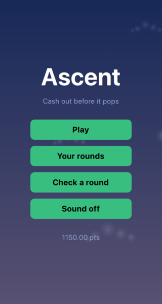

The game is finished, in the sense that it can be played and shipped. This last chapter is about the three directions it most obviously grows in, and what in the design was left ready for them.
A crash game is a multiplayer game that happens to be playable alone. Everyone in a round watches the same balloon and decides independently when to get out, and the tension of seeing other players cash out above you is most of what the genre is for.
The seam for that was cut back in The Round State Machine, where the indirection was described as ceremony that would earn its keep here. The game screen talks to RoundSource, an abstract class, and never to the thing behind it:
// Starts and stops the cycle of rounds. Q_INVOKABLE virtual void start() = 0; Q_INVOKABLE virtual void stop() = 0; Q_INVOKABLE virtual void requestBet(qreal amount) = 0; Q_INVOKABLE virtual void requestCashOut() = 0; signals: // The hash of the seed that decides this round, published before any bet. void bettingOpened(const QString &commitment, int windowMs); void roundStarted(); // The seed behind the commitment, revealed now that it cannot be abused. void roundCrashed(qreal crashPoint, const QString &revealedSeed); void betAccepted(qreal amount); void betRejected(qreal amount); void cashOutConfirmed(qreal payout, qreal multiplier); void cashOutRejected();
Two properties of that interface are what make the swap possible, and both were chosen for it. Nothing returns a value - a bet is a request, and the answer arrives as betAccepted or betRejected - so a source that has to ask a server looks no different to the screen than one that decides immediately. And the round's timing is announced rather than asked for: bettingOpened and roundStarted are how the screen learns where it is, which is exactly the shape of a message arriving over a socket.
A RemoteRoundSource would implement the same five methods over a WebSocket and emit the same signals when the server's messages arrive. main.cpp constructs one instead of a LocalRoundSource, and no QML changes at all.
The fairness scheme is already the multiplayer one. Committing to a hash before betting opens and revealing the seed after the crash is not a ceremony a single-player game needs - the device could simply roll a number - it is how a server proves to players it cannot see that it did not move the crash point after seeing the bets. Running it locally makes the mechanism demonstrable now and leaves nothing to redesign later.
What would need real thought is what the wallet becomes. Points on the device are a number in SQLite; points on a server are a number the client must stop being the authority on, and the client's copy becomes a display of the server's balance rather than the balance itself.
The statistics already exist and are already being counted in the right place - PlayerStats watches the round source, not the screen, so it counts what happened rather than what was drawn. A leaderboard is those same numbers, sent somewhere.
Felgo ships this rather than leaving it to be built: the Game Network plugin provides leaderboards, achievements and the user accounts underneath them, with QML types that drop into a scene. The work is not the leaderboard, it is deciding what to rank people by. Highest multiplier cashed out is the obvious one and the wrong one - it rewards a single lucky round and nothing else. Best streak is better, because a streak is a run of decisions. Total profit is better still, and immediately raises the question of what stops a player from resetting their wallet, which is a server-side question and belongs with the one above.
Achievements are cheaper and land sooner: cash out above 10x, win five in a row, play a hundred rounds. Each of them is a condition on a counter that PlayerStats already keeps.
Everything the interface is drawn from is in one file:
// Seven sizes, each far enough from the next that two of them beside each // other cannot be mistaken for one size drawn twice. Anything that needs a // size not on this list is either shouting or hiding. readonly property int displaySize: 56 readonly property int titleSize: 48 readonly property int headingSize: 18 readonly property int bodySize: 16 readonly property int labelSize: 14 readonly property int captionSize: 12 readonly property int fineSize: 10

No interface colour and no font size is written anywhere else in the QML - which means a second theme is a second Style, not a search through twenty files. A daytime sky, a paper theme, a high-contrast one for players who need it: each is a set of values, and the layout does not know which one it is drawing.
There is a deliberate exception, and it is the more interesting half of the idea. The sky, the balloon and the sparks keep their colours where they are drawn. Those are pictures rather than interface, and a picture's colours are chosen against each other - the balloon against the sky it hangs in - rather than against the rest of the screen. Pulling them into the theme file would make them themeable and make them wrong.
The type scale is worth reusing whatever else changes. Seven sizes, each far enough from the next that two of them side by side read as a deliberate difference rather than a mistake. Most interfaces that look untidy are interfaces with eleven sizes in them, four of which differ by a point.